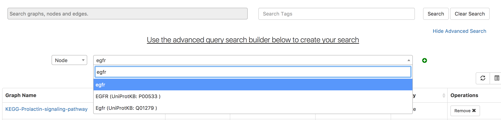

8. Searching Graphs¶
GraphSpace allows the user to search at two different levels. First, the user may visit the Graphs page and search for all graphs (owned by or shared with the user or public) that match the query. Second, the user may visit a specific graph to find nodes and edges within it that match a query.
8.1. Query Semantics¶
GraphSpace supports simple search semantics:
- Node - Provide the node’s label or id, e.g., AKT1
- Edge - Use the syntax tail:head, where tail is the name of the source node and the head is the name of the target node, e.g., Wnt:Fzd.
- Multiple nodes/edges - In order to search for multiple terms, simply seperate each search term with a ”,”. For example: AKT1, AKT3, CTNNB1.
8.2. Searching within Multiple Graphs¶
The user can search for graph with a given name or node or an edge on Graphs Page by following the given steps:
- Enter the name of the graph, node or an edge you are searching for in the search bar.
- Press
Enterkey or click on theSearchbutton.
In this example, the user searches for the list for graphs that contain the protein (node) CTNNB1 (the symbol for β-catenin, a transcriptional regulator in the Wnt signaling pathway). The reduced list of graphs are the graphs where proteins names/labels (nodes) contain CTNNB1 as a substring. In the following example, There are six graphs owned by the user and thirty-two public graphs that contain this protein. Each link in the Graph Name column will take the user to a specific graph with the search term highlighted. In this example, the user clicks on the graph with the name KEGG-Wnt-signaling-pathway and reaches the graph for the Wnt pathway with the searched node highlighted.

8.3. Searching within a Single Graph¶
The user can search for node or edges within a given graph on GraphSpace by following the given steps:
- Enter the name of the node or an edge you are searching for in the search bar.
- The nodes or edges are highlighted automatically as you type in the name of the node or edge in the search bar.
In the following example, the user searches for the graph for two proteins (nodes) CTNNB1 and WNT using the query ctnnb1, wnt. This search query highlights the proteins where protein (node) name/label contains CTNNB1 or WNT as a substring (case-insensitive). In the following example, the graph contains four nodes which match the given query.

In the following example, the user searches for the graph for edges from Wnt to Fzd using the query Wnt:Fzd. This search query highlights any protein-protien interaction (edge) where tail node name or label contains Wnt as a substring and head node name or label contains Fzd as a substring. In the following example, the graph contains three edges which match the given query.

8.4. Advanced Search¶
Use the Advanced search query builder to search for proteins using their alias in UNIPROT namespace and their genenames.
To search by nodes, select Node from the Elements menu, and then enter a protein’s name, the name will automatically display in the search box. The search box includes an autocomplete feature.
To search by edges, select Edge from the Elements menu, and then enter a head and tail protein names, the name will automatically display in the search box. The search box includes an autocomplete feature.
Terms entered in the builder are automatically added to the search box.
Note that the Boolean operator is OR. We plan to add functionality to choose AND and NOT operator in the next release.
8.4.1. Understanding the autocomplete results¶
This image shows an example where the user is searching for proteins with name egfr. The autocomplete box shows three options:
- egfr - Any protein whose name/label contains egfr as a substring.
- EGFR (UniprotKB: P00533) - Any protein whose name/label contains P00533 as a substring.
- Egfr (UniprotKB: Q01279) - Any protein whose name/label contains Q01279 as a substring.
